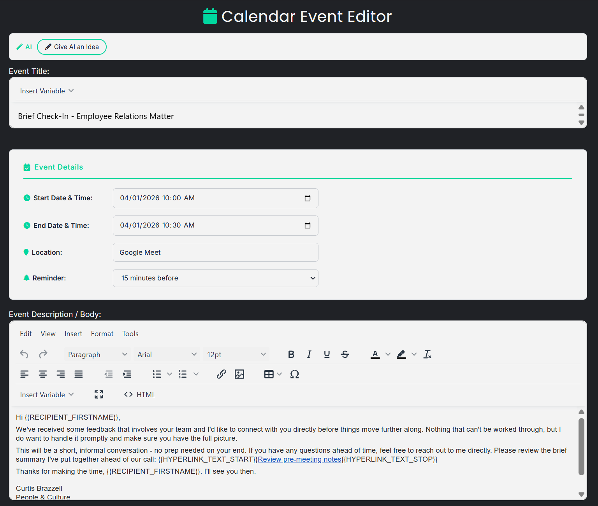
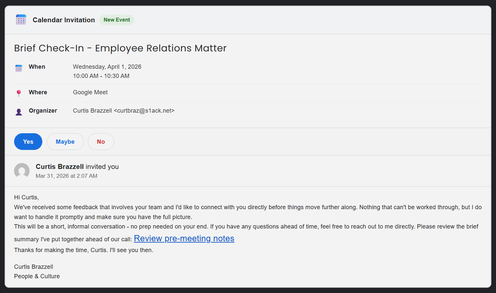
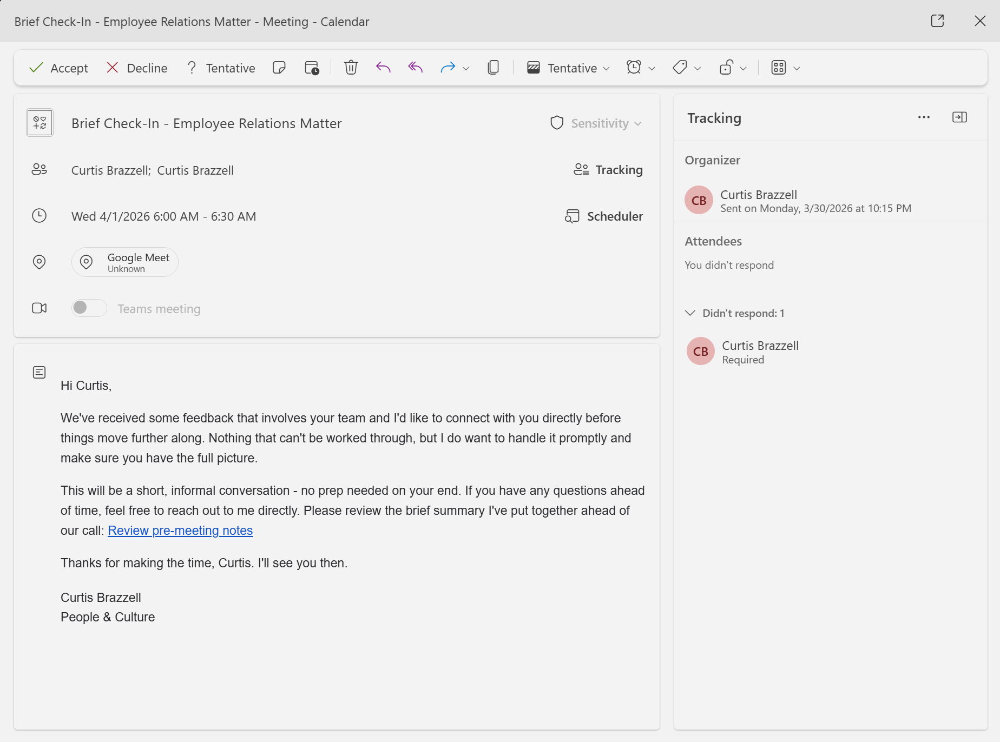

Most phishing programs still assume the attack arrives as an email in the inbox. Real users make trust decisions in more places than that. Calendar invites feel routine, operational, and easier to trust than a normal message.
Calendar event phishing matters because it sidesteps some of the skepticism users have learned to apply to ordinary email. Instead of another message asking for attention, the lure arrives as a meeting request that looks native to Outlook or Gmail. The target sees a title, a date, a location, a reminder, and event details that can contain the tracked link. It feels like work, not marketing.
The PhishU Framework now supports that technique directly with a first-class Calendar Event Invite template. Operators select it on the Email Templates page just like any other template, move into a dedicated calendar editor, configure the event details, write the description in a WYSIWYG editor, and let the Framework deliver the result as a real ICS invitation using text/calendar; method=REQUEST.
The workflow also supports the same kind of AI acceleration PhishU already brought to email content. The operator can give AI an idea, and the Framework will generate a full event title, event body, and suggested calendar metadata such as timing, location, and reminder settings using campaign context, sender details, company research, and supported placeholders.

Why Calendar Invites Work So Well
Calendar invites have a better starting position than most phishing emails. They do not just sit in a crowded inbox. They can appear as a real event card, show up in the calendar view, and return later as reminders. A normal phish asks the user to trust a message. A calendar invite asks the user to trust their routine.
This makes the technique useful in realistic social-engineering assessments. Defenders need to know whether employees will click a suspicious link in something that feels operational, not promotional, and whether their awareness program is overfitted to obvious email tells while ignoring business-native delivery paths.
Email-only testing is too narrow. If an organization measures only inbox phishing, it can miss whether users will trust an event that appears to come with built-in legitimacy. Many people treat meeting requests as lower-friction decisions than ordinary messages.
How the Calendar Event Invite Workflow Works
Inside the Framework, the workflow is deliberately simple. The operator chooses the Calendar Event Invite template, sets the event title, defines the start and end time, picks the location, chooses the reminder timing, and writes the event description. The description supports the same variable-driven authoring model as other templates, including recipient personalization and tracked-link insertion.
Under the hood, the template stores calendar metadata in the template's attachment JSON as calendar_meta. That includes the event timing, location, and reminder settings. The AI path can populate those fields directly, which makes it faster to build a plausible meeting request that matches the surrounding campaign context.

What the Target Actually Sees
On the receiving end, the goal is not to send a message that vaguely resembles a calendar invite. The goal is to send a calendar event that appears natively inside the client's mail and calendar workflow. The Framework does that with an ICS request that surfaces as an actual event invitation.

Why the Training Tie-In Matters
A lot of tools can simulate a phishing moment. Far fewer can teach from it properly afterward. Calendar event campaigns in the PhishU Framework automatically feed a dedicated training slide that shows the exact invite the recipient received, including the organizer details, the event body, and the suspicious domains that mattered.
Calendar trust is a different lesson than inbox trust. If someone accepts a questionable calendar invite or follows the tracked link in the event body, the remediation should explain how the calendar workflow itself was used against them. Generic phishing training rarely does that well. Campaign-linked training does.
The training renderer is also designed to look like a real calendar client instead of a plain text dump. It shows the event details, organizer line, and accept, maybe, and decline actions in a familiar invite layout, which makes the training easier for the recipient to map back to the exact thing they saw in the campaign.
Why This Matters for Red Teams, Pentest Firms, and MSSPs
Most phishing toolchains still force operators to think in email-only terms. That is a problem for service providers because real social engineering keeps moving into workflow-native channels. A modern platform should support the delivery paths attackers are already using, not just the ones awareness programs are most comfortable measuring.
Calendar Event Invite phishing is a good example of why the hosted-platform model matters. The operator does not need to hand-build ICS files, invent the event narrative from scratch, or create separate training content after the fact. The Framework compresses the workflow into a template, AI-assisted editor, delivery path, and training story that all fit together.
This is especially useful when the goal is not just to count clicks, but to demonstrate a blind spot in how the client thinks about phishing risk. If they have trained heavily on suspicious emails but have never tested whether employees trust calendar requests too easily, this technique exposes that gap fast.
The Better Awareness Story
The point of adding Calendar Event Invite phishing is not novelty. The point is realism. People do not make security decisions only in their inbox. They make them in calendars, chat clients, document-sharing tools, login prompts, and every other place work happens. A phishing assessment platform should reflect that reality.
This is what makes it a useful technique for the PhishU Framework. It broadens the delivery surface, keeps the operator workflow simple, and turns the result into something defensible in both reporting and training. Most awareness platforms still test email. Real attackers use calendar invites too.
Want to test calendar-based phishing in your environment?
The PhishU Framework now supports Calendar Event Invite phishing with AI-assisted authoring, native invite rendering, tracked links, and campaign-linked training that shows exactly how calendar trust was exploited.
Request a Quote